Fundação
Início do projeto social em Monte Alto/SP.
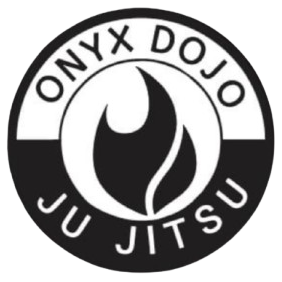
ONYX DOJO Ju Jitsu TradicionalMonte Alto / SP | Desde 2019
Formando cidadãos através do esporte, da disciplina e do respeito.
Quem Somos
O ONYX DOJO é um projeto social sem fins lucrativos fundado em 2019 na cidade de Monte Alto/SP. A iniciativa nasceu do Sensei Osmario para oferecer gratuitamente a prática do Ju Jitsu Tradicional a crianças e adolescentes.
As atividades começaram na garagem do Sensei Osmario e seguem ativas por meio do trabalho voluntário de instrutores e colaboradores. Hoje, o projeto atende aproximadamente 25 a 30 alunos de forma totalmente gratuita.
Início do projeto social em Monte Alto/SP.
Primeiras aulas conduzidas com espírito voluntário e comunitário.
Crianças e adolescentes atendidos sem custo.
Projeto Social
Promover o desenvolvimento físico, mental, social e educacional por meio dos princípios do Ju Jitsu Tradicional, fortalecendo respeito, disciplina e responsabilidade.
Ser referência em Monte Alto e região como projeto social de artes marciais, preservando e valorizando o Ju Jitsu Tradicional.
Instrutores e colaboradores mantêm as atividades ativas com dedicação, seriedade e compromisso com a comunidade.
Valores
Ju Jitsu Tradicional
O Ju Jitsu Tradicional carrega uma história ligada à disciplina, ao respeito, à eficiência técnica e ao aperfeiçoamento constante. Mais do que uma prática esportiva, é um caminho de formação do caráter.
No ONYX DOJO, a modalidade é ensinada com atenção aos fundamentos, à postura, à convivência saudável e à preservação cultural, aproximando crianças e adolescentes de uma tradição marcial séria e educativa.
Horários
Galeria
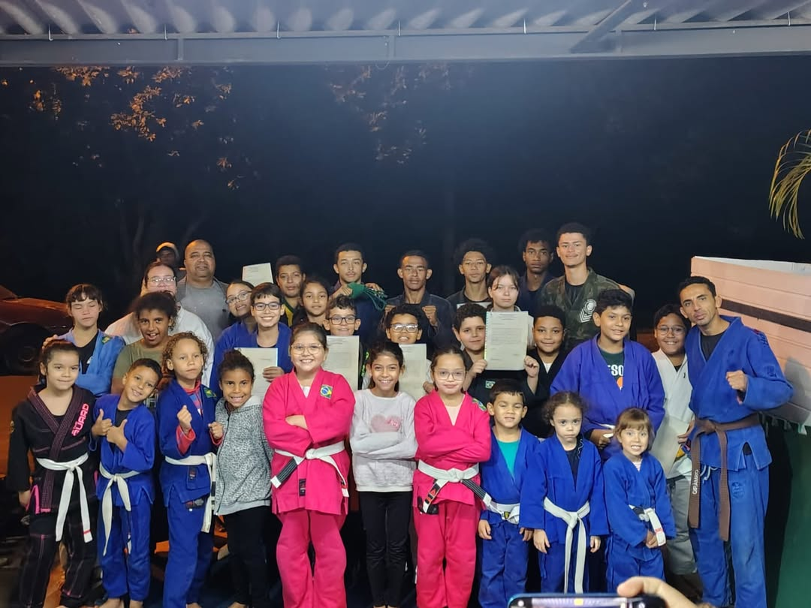
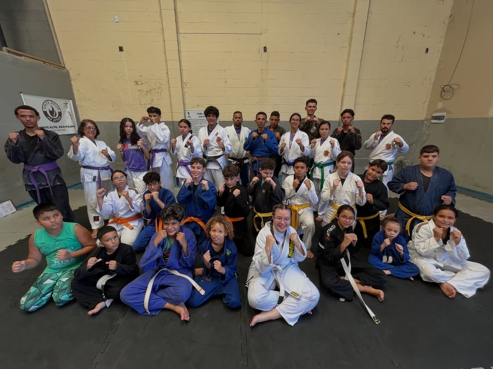
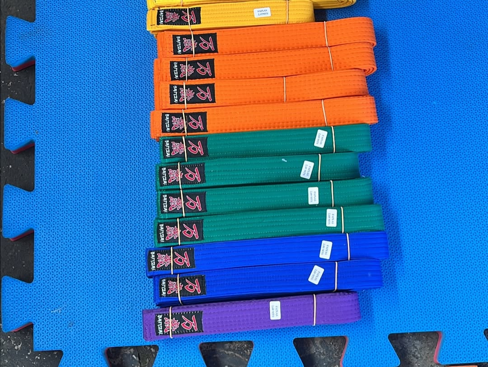
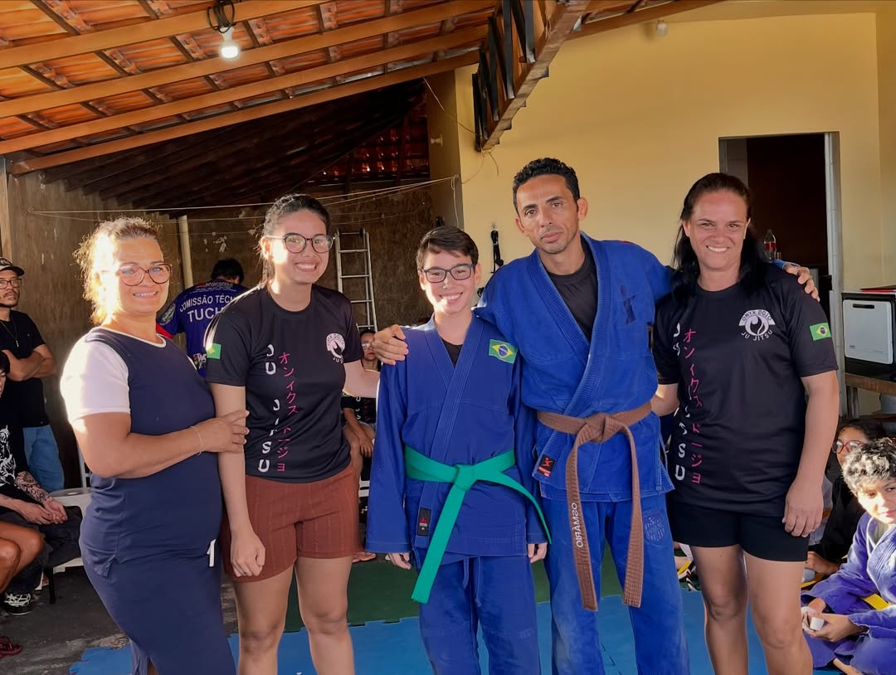
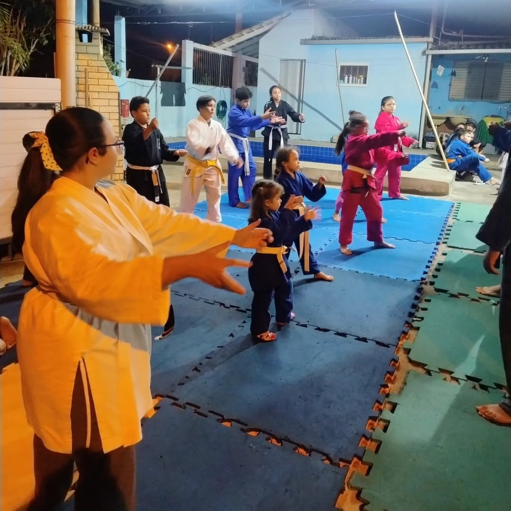
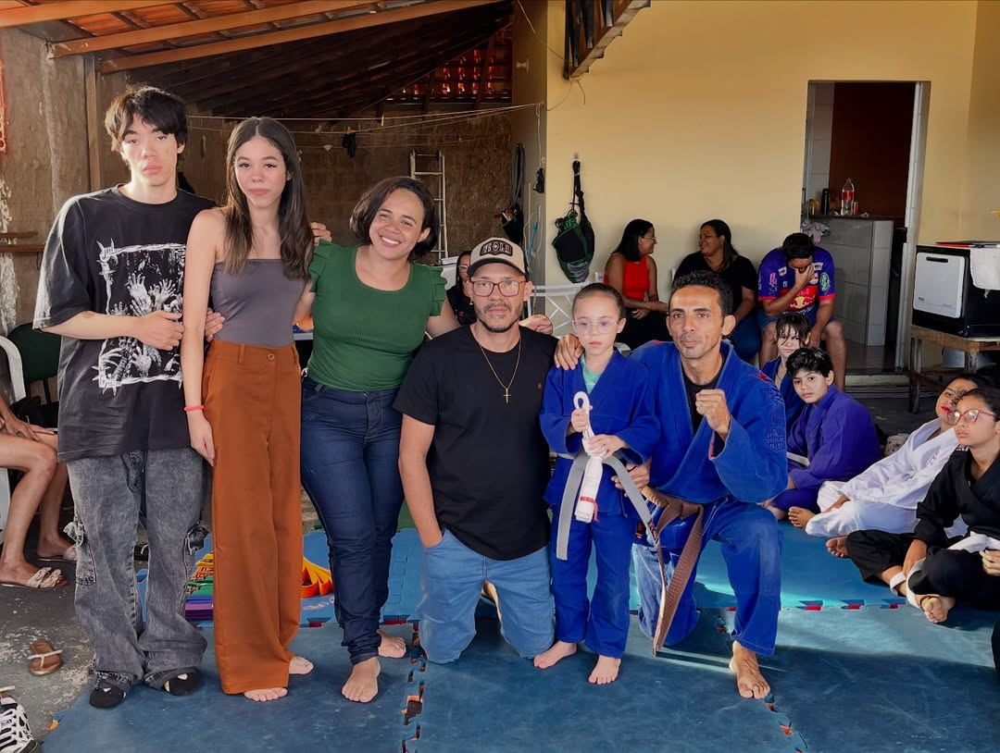
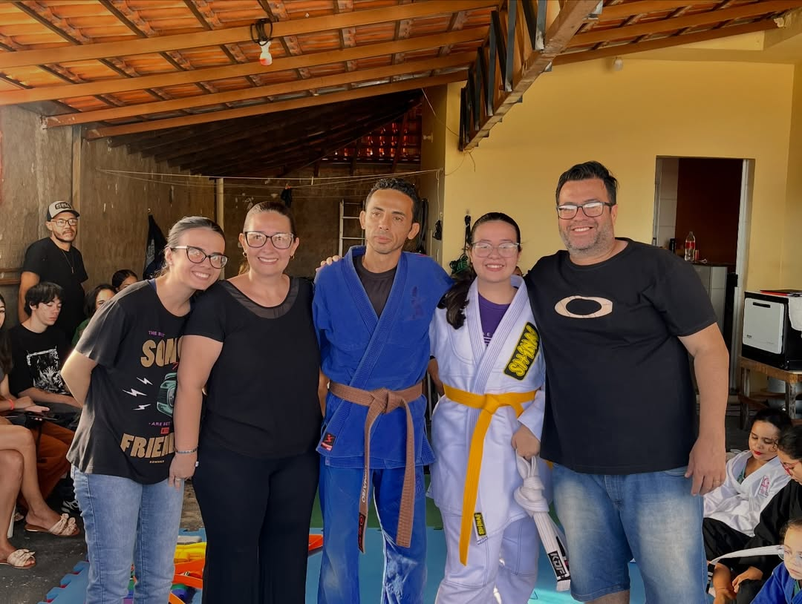
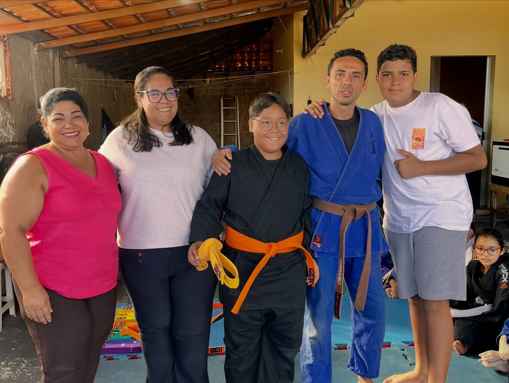
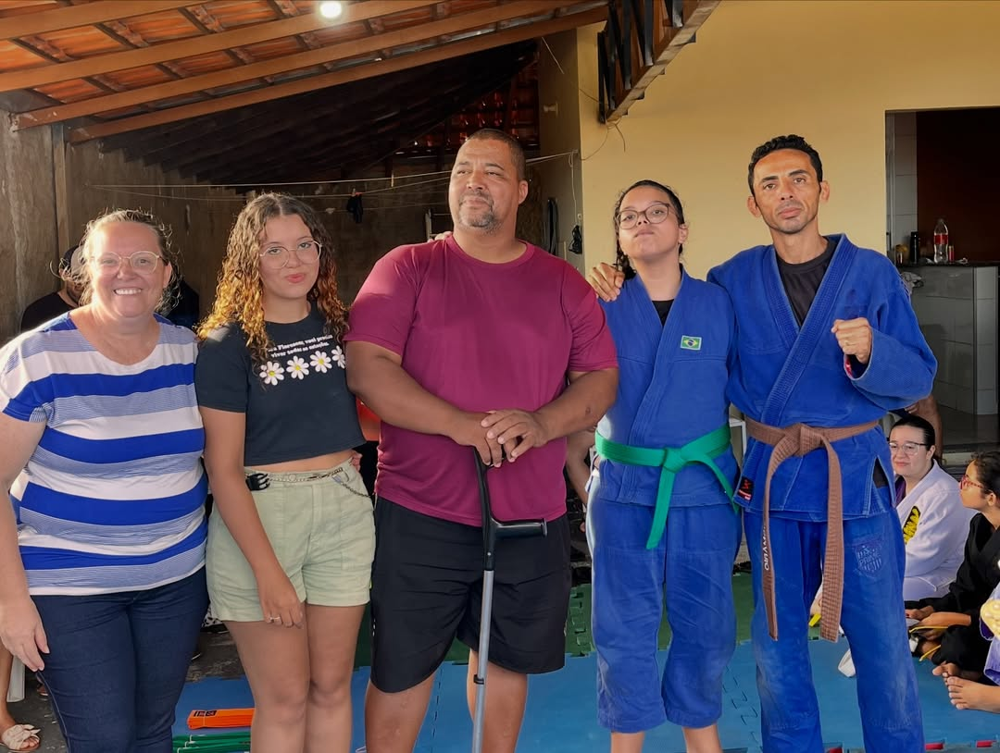
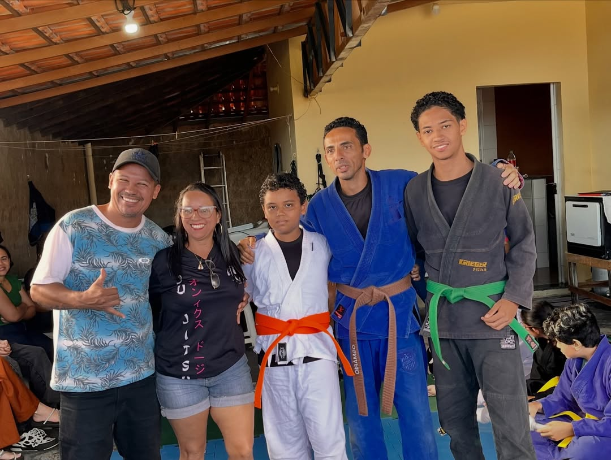
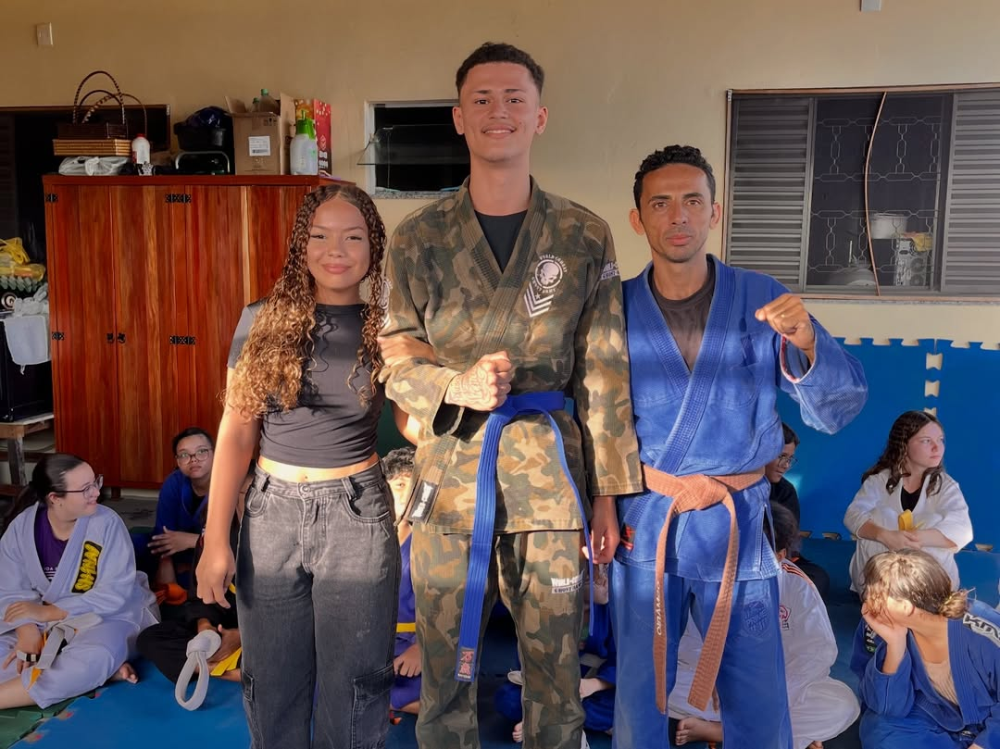

Parceiros
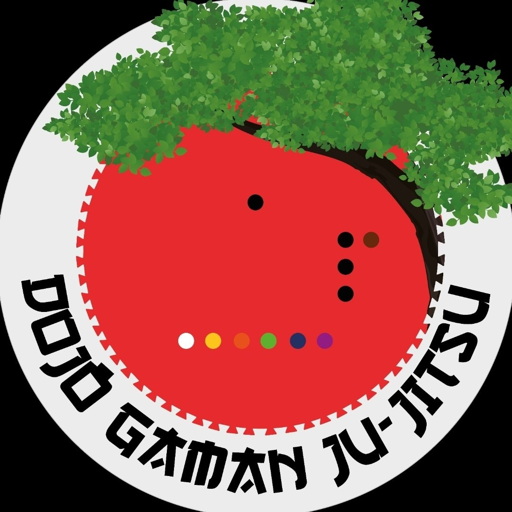
São Paulo
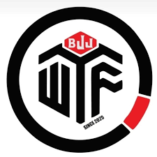
Ribeirão Preto
Resultados do Projeto
Apoie o Projeto
Feedbacks e Depoimentos
Alunos e familiares compartilham como o Ju Jitsu Tradicional contribui para a formação dentro e fora do tatame.
"O dojo ensina muito mais do que técnica. Ensina respeito, compromisso e confiança."
Familiar de aluno
"No tatame aprendi disciplina e fiz amizades que me ajudam a evoluir."
Aluno do projeto
Contato